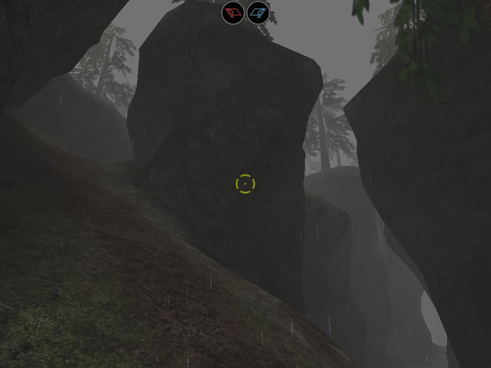
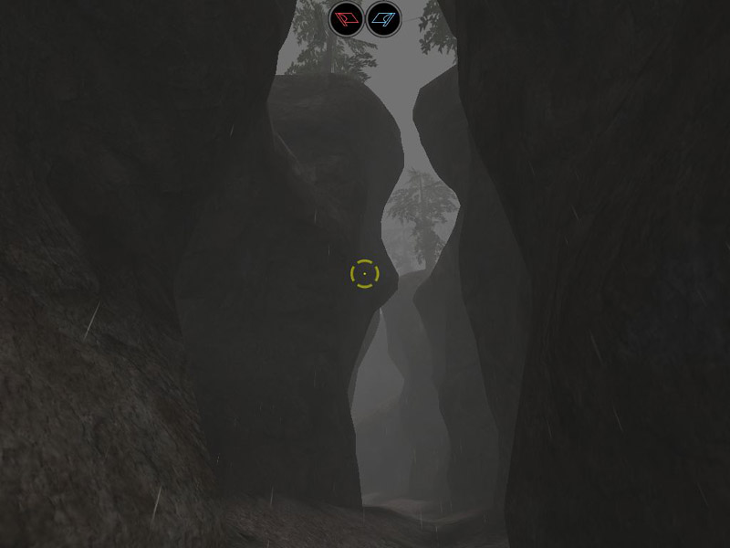

Bot 40/Developer Journal
Bot_40's Developer Journal
Sunday 2/3/2003
OK, I got some stuff done on what was StoneForts]I[ but I'm not going to call it that now cuz I've gone off the name. Plus the fact that there won't be much of the forts left and they won't even be stone (Just brick ruins). I'll be making meshes like the ones in Ruination (same textures) but I got a specific idea what I want so the default ones won't do. Unfortunatly I'm having trouble getting a copy of 3D Studio Max 5 (I wanna bake lightmaps for the ruin meshes) so I won't be doing much more work on the map till I can do that.
I am able to post some pics here though which is good. Not much to see so far, all that's there is the cliff meshes, terrain, fog, and trees. It's more to show the atmosphere more than anything cuz there's so much more to go in yet. The lighting that you see is probably staying much the way it is although there is lots more to go in. Please don't tell me it's all too plain, I'm gonna put in some bright orange torches along the paths which should make some nice contrast with the dreary fog.


Saturday 8/2/2003
Wiiii testing, wow this works. This is leet. I only just started messing with teh wiki a bit and it's leet pwnd btw
errrr, blagh, probably just use this page for ranting and posting any thoughts and stuff I've got. It's quicker than updating my site and I haven't got a html editor atm (the reason why my paeg hasn't been updated for like, 10 years)
I don't really care if anything here doesn't make sense, I'm only using the page for ranting and posting random thoughts so if it looks like bullshit, it probably is  Anyways, it will prolly give the page more character...or something...errr...yeah
Anyways, it will prolly give the page more character...or something...errr...yeah 
I finally got a new graphics card, my old one wouldn't run the editor and the game ran like shit. Anyways, I got this Radeon 9700 but it turned out the fan was faulty and didn't work unless I have my PC case on it's side. So I sent it back (After 1-2 days fiddling with the ed of course ). Anyways, it got sent back saying there was no fault so I sent a barrage of angry emails. Gotta send it back yet again in the next 1-2 days so I won't be able to use the editor again :\
eerrr ya, anyways, working on a ctf map, CTF-StoneForts]l[. It's gonna be a terrain based map (*Yawn*) but hopefully it'll be a bit original. It's based around a very narrow and tall canyon, lots of rain, fog, greyness, sad music etc... A very dreary atmosphere.
I got most of the cliffs done in 3DSM today, I finally got to grips with the main features so I was working pretty fast (for once ) The cliffs are about 12,000 polys atm (That's with the entire map in view) but they are broken up into 8 meshes so with a few anti portals I can push that down a bit. Then that will leave me 50,000 or so polys in view to use on the ruins which will be the bases. No I ain't using those ruination meshes (which already are starting to look old), this map is made of strictly custom stuff
I also tried the terrain editor for the first time, pretty nice but I found it really fiddly to use, probably because I'm working on a rather small scale for it. It's probably better with larger scale terrains.
Anyways, I did half the terrain and I'm looking for a way to rotate the terrain for the other side of the map, I fear this may be virtually impossible though, I may have to redo the terrain from scratch for the other side which sucks :\
I was listening to OW-Ronin.umx which I got off furpile.com. Leet track, anyways, it kinda inspired me to make a space station like map so I'll probably do that after I've finished my current map. Ya, I normally get all my inspiration from listening to music, I guess I'm like that. Like, I was listing to OW-Machina and it made me think of an old factory, but not like a generic richrig factory, I mean a REALLY bashed up one that's completly fallen apart, smashed concrete and twisted metal beams everywhere, sunlight streaming through open ceilings, a really depressing environment. Dunno if I'll ever get round to doing that.
wow, I got so much done today, it's been ages since I did some serious mapping, feels great to be back in action. Feels like shit to have all these new problems, hopefully I'll get to grips with these small problems though then I can start pumping out pure leetness again
ZxAnPhOrIaN: Do you wan't the fog color and sunlight? I will be glad to give you that!
Bot 40:Nah, thanks but I got the fog and sunlight just about the way I want it now. Hopefully when I get my graphics card back I will be able to post some pics
Bot 40: Hmm, I'm assuming it's ok to post pics of my map here and host them on the wiki. Not like I'm remote linking or anything.
Mosquito: Nice looking map I've been to real world places that Look like that... And is that a Shield rock or old riverbed? Because if its a Shield Rock it would be crumbling at the edges and leaving stones on the ground. It looks like a Riverbed tho.. and some Rocks on the ground for good measure (sunk into the ground: deco layer) If you wanna look realistic.
Bot 40:Err, I need to put a small river/stream at the bottom, will put some debris there also. don't know what a shield rock is...
ZxAnPhOrIaN: Wow... Can you walk up that grade?
Bot 40: Ya, it's not as steep as it looks. I think it's just the camera angle :\